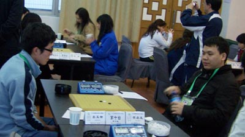

期盼了一年，智力运动会终于开始了，五子棋进入正式大型赛事，是每一个五子棋爱好者都渴望参与的，这是在智运会之前唯一的想法。整个个人赛的赛程中我出现了选择上的问题，比如不愿意接受和棋变化的选择，同样我也受到了低落情绪的影响，比如35手就败给陈子豪（木头）那盘之后，感觉很沮丧，在接下来与牛奶对局的中真的算不进去了，曾经闪过想放弃的念头。在我面临这生死关头的时突然想到，如果我就因为一盘棋的郁闷而放弃了整个比赛，那将会带给我怎样的后悔莫及，而且当时才第8轮，重新调整好自己的情绪后，继续奋斗在赛场，就这样我挺过来了。
可以说整个过程有喜有悲，喜的是开局打得不错4连胜，悲的是输了那盘棋后的郁闷心情，最终运气站在了我这边，让我得到了第一个个人冠军，下了这么多年，出来比赛也整整3年，对于我来说这个冠军来之不易，当时我的心情没有激动，我反而想到的是就这一念之差，结果就是两个极端，如果当时我放弃了，那么冠军就将远离我，可能是永远的远离我。在这里我想和大家说的是：无论去做什么，都不要轻易放弃，你的坚持不一定有最满意的回报，但如果放弃就肯定没有回报。
收起智运会的所有回味，在这里我很感激的就是我的家族炫飞棋社，家族一直坚持以实战作为第一选择的方针，使我和我的队友们都得到了很多实战锻炼的机会。就我个人而言，每次的比赛都检验出自己的种种毛病，在下次比赛前都能很好的去克服掉这个毛病，这就是每次比赛后真正的收获。家族在这两年的支持和投入，让我们在每次的摸滚中成长起来，谢谢你--炫飞。
还有上海连珠道场的朋友们，特别是顾炜老师，在这两年当中，我作为非道场会员能参加上海连珠道场的所有比赛，都是因为顾炜老师给我很多机会，因为我知道有些比赛棋手首先是要具备一个参赛资格的（比如浙江赛A组只有8个名额），在这两年道场的实战带给我很大的帮助，给了我一个发现自我问题和克服问题的平台。也谢谢葛老师经常教给我一些变化，和一些实战担忧的东西。同时也想和道场所有的朋友们说，在道场里和你们下棋交流真的很开心。

［ 茗弈小刀 于 2009-11-30 14:21:34 时奖励此帖[金币加 20 威望加1］
成熟了。。。。而且胖了不少
冠军棋手也有意志即将崩溃的时候
真实 比较感人
支持发哥
更象佛了

［ 大雪无痕 于 2009-12-18 14:12:46 时花20金币送鲜花一朵］
越来越重量级了